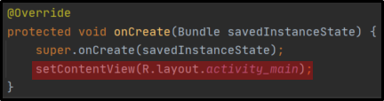
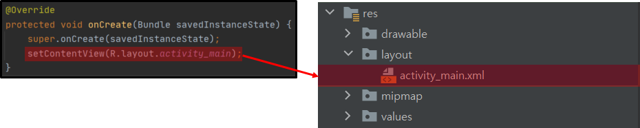
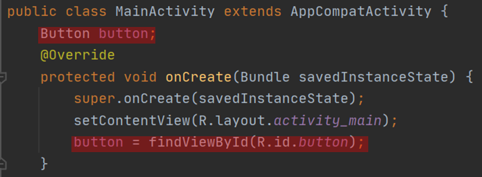

#ANDROID setContentView & findViewByID
#setContentView
#findViewByID
*개인적인 안드로이드 공부 내용을 정리한 글 이기에, 잘못된 내용이 있을 수 있습니다.
#setContentView
안드로이드 스튜디오에서 처음 프로젝트를 생성하면, 기본적으로 activity_main.xml 레이아웃과 MainActivity.java 파일이 생성된다.
activity_main.xml 레이아웃에서 화면에 표시될 디자인을 구성하고, MainActivity.java 파일에서는 activity_main.xml 레이아웃을 세부적으로 구성하거나, 제어를 담당한다. (MainActivity.java 에서도 디자인을 바꿀 수 도 있다.)
그런데, MainActivity.java 파일의 초기 소스코드를 보면 다음과 같이 onCreate 함수가 작성되어 있다.
onCreate 함수에 대해 자세하게 이해하기 위해서는 액티비티의 생명주기라는 것을 공부해야 하는데, 이번 포스팅의 주제는 이것이 아니니 추 후에 다루도록 하겠다. 그냥 Activity가 처음 실행될때 가장 먼저 호출되는 메소드라고 이해하고 넘어 가도록 하자.
onCreate함수 안에 setContentView() 메소드가 작성되어 있는데, 이 메소드는 레이아웃 xml의 내용을 파싱하여 뷰를 생성 및 속성을 설정하는 역할을 담당한다. 즉, setContentView() 메소드가 MainActivity.java 파일과 activity_main.xml 레이아웃 파일을 연결해 주는 역할을 하는 것이다.

setContentView() 메서드를 보면 괄호 안에 R.layout.activity_main 가 보인다.

R = res 폴더 , layout = res 폴더 안의 layout 폴더 , activity_main = layout 폴더 안의 activity_main.xml 파일을 의미한다.
setContentView() 메소드의 인자로 리소스ID를 전달하여 레이아웃이 출력되게 된다.
그런데 어떻게 변수만으로 XML 파일을 가리킬 수 있는지 의문이 생길 수 있다. 그 이유는 안드로이드 스튜디오는 자동으로 리소스를 관리해 주는 기능을 갖고 있기에 가능한 것이다.
#findViewByID
setContentView() 메서드를 이용해 xml 파일을 연결하고 레이아웃을 출력하게 하는 것 까지 공부했는데, 한 가지 문제가 있다. activity_main.xml 레이아웃에서 프로그래머가 새롭게 생성한 뷰 (버튼, 텍스트 등..)는 초기 설정만 정의되어 있기에 영향을 줄 수 가 없다.
새롭게 생성한 뷰에 영향을 주기 위해서는 activity_main.java 에서 findViewByID 메소드를 이용해야 한다.
우선, 각 뷰에 맞는 객체를 생성해 준다. 다음으로 findViewByID 메서드를 이용해서 괄호 안에 R.id.객체id 를 적어준다.

이제 button 객체를 이용해 원하는 함수를 정의한다 던가 디자인을 변경하는 등 사용자가 원하는 기능을 Button 뷰에 설정할 수 있다.